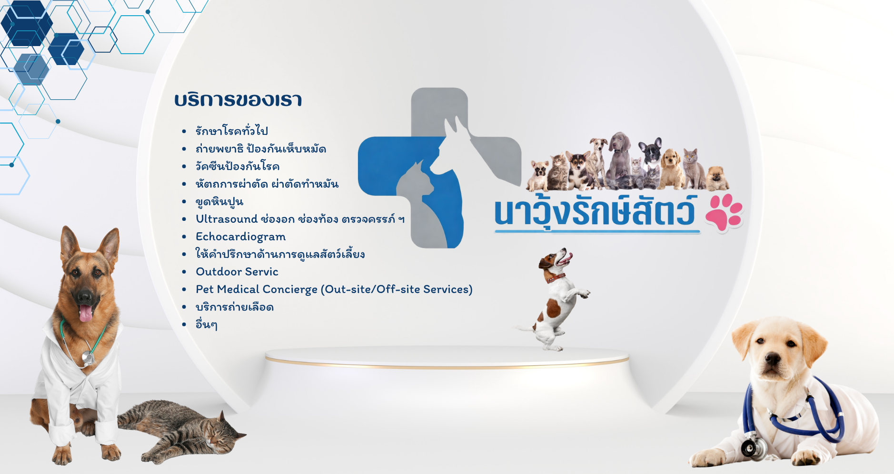
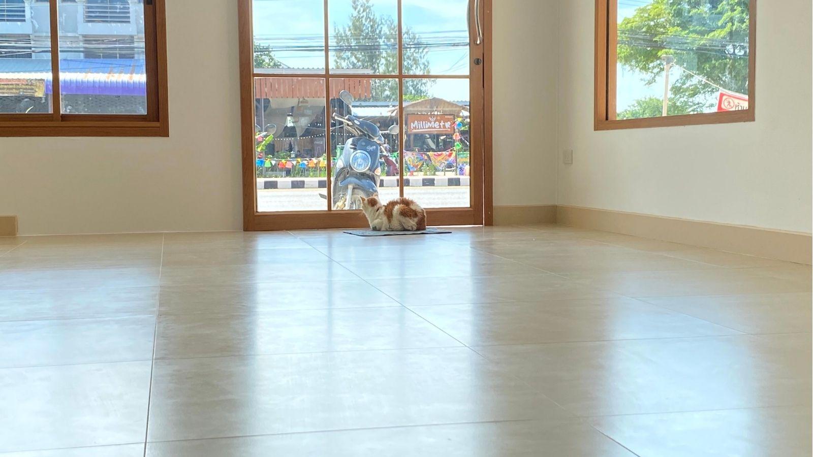
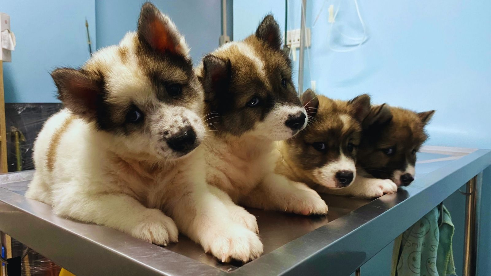
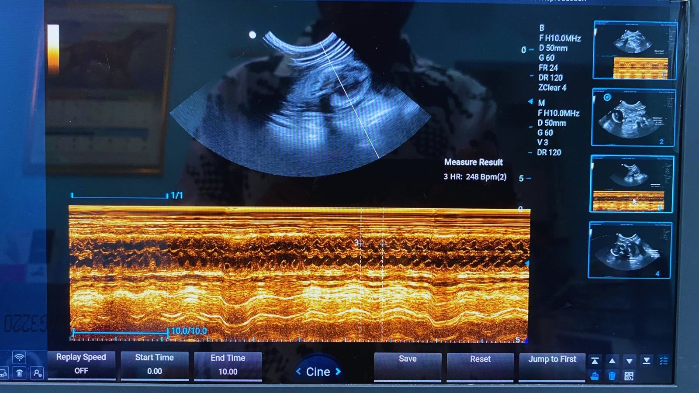
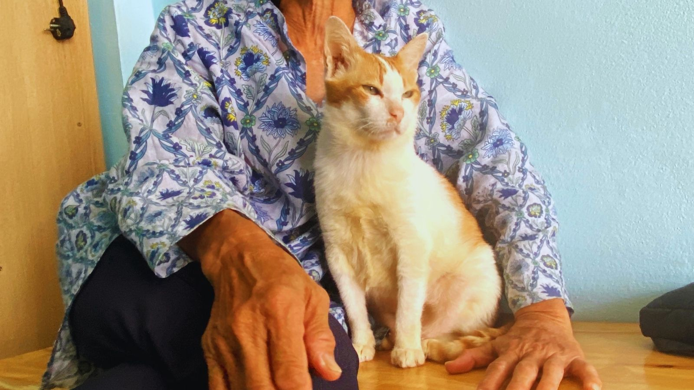

```
```

คลินิกรักษาสัตว์ครบวงจร ดูแลสุนัขและแมว ตรวจรักษา วัคซีน ผ่าตัด ตรวจเลือด และให้คำปรึกษา ด้านสุขภาพสัตว์เลี้ยง ด้วยความใส่ใจเหมือนสมาชิกในครอบครัว
📍 นำทางมาคลินิกตรวจวินิจฉัยและรักษาโรคทั่วไป
วัคซีนสุนัขและแมวทุกช่วงวัย
ทำหมันและผ่าตัดทั่วไป
ตรวจสุขภาพและโรคติดเชื้อ
ดูแลสัตว์เลี้ยงด้วยมาตรฐานวิชาชีพ
ตรวจรักษา วัคซีน ผ่าตัด และตรวจสุขภาพ
ดูแลสัตว์เลี้ยงทุกตัวเหมือนสมาชิกในบ้าน
พร้อมให้บริการสัตว์เลี้ยงทุกช่วงวัย




"บริการดีมากๆครับ คุณหมอเอาใจใส่ในการรักษาอย่างดีครับ"
"บริการดีค่ะ พามา 3 ตัวแล้ว 😊"
"รักษาดีมากเลยครับ"
"หมอเก่ง รักษาดี ที่สำคัญราคาดีมาก"
"ดูแลน้องแมวขาวดีมาก ถึงน้องจะดุหนวกหูขี้โวยวาย"
"สัตวแพทย์ใจดี คลินิกสะอาด อธิบายอาการการรักษาละเอียด"
"หมอพูดเพราะใจดี รักษาหมาแมวหลายตัวแล้วค่ะ 💗💗"
"ดูแลแนะนำดีมากครับ พาน้องมาทุกครั้งที่น้องไม่สบายครับ +++"
"เอาใจใส่สัตว์เลี้ยงเป็นอย่างดี ให้คำแนะนำและดูแลอย่างมืออาชีพ"
"บริการรวดเร็ว คุณหมอใจดี อธิบายรายละเอียดการรักษาเข้าใจง่าย"
📍 คลินิกนาวุ้งรักษ์สัตว์
📍 133/3 หมู่ 8 ตำบลนาวุ้ง อำเภอเมืองเพชรบุรี จังหวัดเพชรบุรี 76000
📞 095-945-2347
🕒 เวลาเปิดทำการ 08:30 - 19:00 น.
เพิ่มเพื่อน LINE